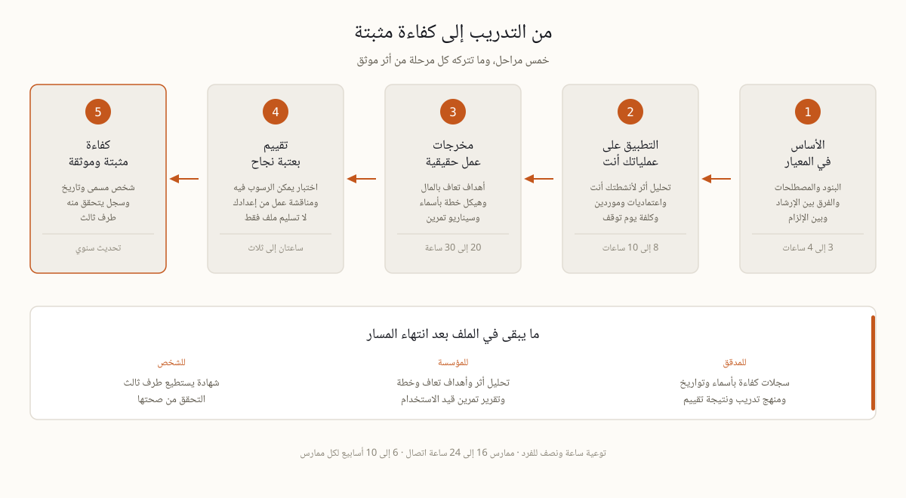

تخيل الاجتماع الذي يبدأ به التدقيق. تعرض على الفريق الفاحص خطة استمرارية مرتبة وأهداف تعاف تبدو معقولة، ثم يأتي سؤال بسيط، من أعد هذه الوثيقة وعلى ماذا تدرب؟ هنا تصمت الغرفة عادة. يشترط المعيار AE/SCNS/NCEMA 7000:2021 أن تحدد المؤسسة الكفاءة اللازمة لمن يديرون الاستمرارية وأن توفرها وأن تحتفظ بدليل موثق عليها، وبنية البنود خلف هذا الاشتراط مشروحة في صفحتنا عن المعيار نفسه. الملاحظة التي تكتب هنا صغيرة في حجمها كبيرة في أثرها، لأنها تضع علامة استفهام على كل إجابة سبقتها. نظام إدارة لم يتدرب عليه أحد يبقى مجموعة ملفات مرتبة لا نظاما يعمل. ولهذا يشترى التدريب على المعيار 7000 بوصفه دليلا يودع في الملف، لا فعالية تنتهي بصورة جماعية.
دورة واحدة للجميع هي أسرع طريقة لإهدار ميزانية التدريب، فما يحتاجه مشرف الوردية الليلية في مستودع ليس ما يحتاجه عضو مجلس الإدارة. المستوى الأول توعية لكل من ورد اسمه في خطة أو في شجرة اتصال، من 60 إلى 90 دقيقة مرة في السنة، وأهدافها ثلاثة فقط، معرفة الإشارة التي تعني حدثا، ومعرفة من يملك صلاحية إعلان الحدث، ومعرفة مكان النسخة السارية من الخطة. المستوى الثاني ممارس، ويشمل مسؤول الاستمرارية ومالكي العمليات وفريق تعافي تقنية المعلومات ومنسقي الإدارات، من 16 إلى 24 ساعة اتصال موزعة على ثلاثة إلى ستة أسابيع، لأن العمل بين الجلسات هو الدورة الحقيقية. المستوى الثالث تنفيذي للمجلس واللجنة التنفيذية ولجنة التدقيق، ساعتان إلى ثلاث هدفها اعتماد شهية التعطل وفهم كلفة أقصى فترة تعطل مقبولة وطرح ثلاثة أسئلة تغير الخطة فعلا. وهناك جمهور رابع يتوسع بسرعة، فرق الموردين التي تجهز ملف الاستمرارية لمناقصة حكومية وتحتاج مسار الممارس مضغوطا وموجها نحو الأدلة.
الحكم على المنهج سهل متى عرفت ما يجب أن يكون فيه. ستة عناصر تفصل الدورة العاملة عن قراءة جماعية لنص المعيار.

خمسة أسئلة تطرح قبل توقيع أمر الشراء تفرز مقدمي التدريب بسرعة.
ثلاث دعاوى تستحق شكا معلنا. شهادة اعتماد في يوم واحد، فالكفاءة في نظام إدارة لا تقاس في ست ساعات مهما كتب على الورقة. وشهادة تصدر قبل تسليم أي عمل. وأي إيحاء بأن دورة تجارية معتمدة من الجهة الوطنية، فالمعيار ينشر مجانا على ncema.gov.ae وبرامج المطابقة تنظر إلى المؤسسات لا إلى مقدمي الدورات، فتحقق من ادعاء كهذا من مصدره قبل أن يدخل ملف الأدلة.
اضبط الساعة بصدق قبل أن تخطط للسنة. التوعية تكلف نحو ساعة ونصف لكل شخص في السنة. الممارس يحتاج من 16 إلى 24 ساعة اتصال، إضافة إلى 20 إلى 30 ساعة من عمله الخاص لإنتاج مخرجات تصمد أمام المراجعة، ثم التقييم نفسه، أي ستة إلى عشرة أسابيع لشخص واحد يفعل هذا إلى جانب وظيفة كاملة. قارن ذلك بجدول المؤسسة، إذ تحتاج شركة متوسطة الحجم من ثلاثة إلى ستة أشهر من فحص الفجوات إلى الجاهزية للتدقيق. الجدولان لا يلتقيان إلا إذا سبق التدريب التنفيذ بدل أن يتبعه، وإلا أعيد تحليل الأثر مرتين وكانت النسخة الأولى هي الأغلى. ووضع التدريب في الربع الذي يسبق التدقيق يوفر إعادة عمل كاملة، أما وضعه بعد إغلاق الملاحظات فيحوله إلى احتفال بما انتهى. على هذا التسلسل بني برنامج ERGP، ست وحدات ومخرج عملي في نهاية كل وحدة ومشروع ختامي يناقش أمام ممتحن، بالعربية وبالإنجليزية. وأيا كان المسار الذي تختاره، اشترط الشكل نفسه، تعليم ثم تطبيق ثم إنتاج ثم تقييم ثم تسجيل.
إن لم يبق بعد الدورة سوى ملف بإطار مزخرف فقد اشترت المؤسسة حضورا. التدقيق المقبل سيطلب كفاءة، وهما شراءان مختلفان تماما.
| الصيغة | الجمهور | المدة | ما تتركه بعدها |
|---|---|---|---|
| جلسة توعية | كل من ورد اسمه في خطة | 60–90 دقيقة سنويا | سجل حضور ومعرفة محدثة بشجرة الاتصال |
| دورة الممارسين | قائد الاستمرارية ومالكو العمليات وتعافي التقنية | 16–24 ساعة تدريبية على 3–6 أسابيع | تحليل أثر وأهداف تعاف وهيكل خطة وتقرير تمرين ونتيجة مقيمة |
| إحاطة تنفيذية | المجلس واللجنة التنفيذية ولجنة التدقيق | 2–3 ساعات | شهية انقطاع معتمدة وثلاثة أسئلة للمجلس |
| مسار أدلة الموردين | فرق العطاءات الحكومية | مسار الممارسين مضغوطا | ملف أدلة استمرارية للعطاء |
| برنامج الشهادة (ERGP) | التنفيذيون والقادة، بالعربية أو الإنجليزية | ست وحدات بالوتيرة الذاتية | ستة مخرجات ومناقشة ختامية وشهادة قابلة للتحقق |
الهيئة الوطنية تنشر المعيار AE/SCNS/NCEMA 7000:2021 وتقيم المنظمات لا مزودي الدورات التجارية. وأي مزود يدعي اعتمادا من الهيئة لدورته ينبغي التحقق منه من المصدر قبل أن تدخل شهادته ملف الأدلة.
التوعية 60–90 دقيقة سنويا. والممارس يحتاج 16–24 ساعة تدريبية مع 20–30 ساعة عمل ذاتي، أي ستة إلى عشرة أسابيع بجانب وظيفة كاملة. والإحاطة التنفيذية تكفيها نصف صباح.
ينبغي ذلك حيثما تنفذ الخطط بالعربية. وبرنامج ERGP على هذا الموقع متاح بالعربية بالكامل إضافة إلى الإنجليزية، وهو أول شهادة في حوكمة المرونة بتقديم عربي كامل.
سجل كفاءة لكل شخص: الاسم والدور والمنهج والتاريخ والمقيم والنتيجة، محفوظا مع المعلومات الموثقة لنظام الإدارة، مع محفز إعادة تدريب مؤرخ.
برنامج ERGP هو المسار التنفيذي عبر هذا التسلسل، أول شهادة في حوكمة المرونة متاحة بالكامل باللغة العربية وبالإنجليزية أيضا. ست وحدات وستة مخرجات عملية ومشروع ختامي يناقش أمام ممتحن وشهادة قابلة للتحقق.
تعرف على برنامج ERGP